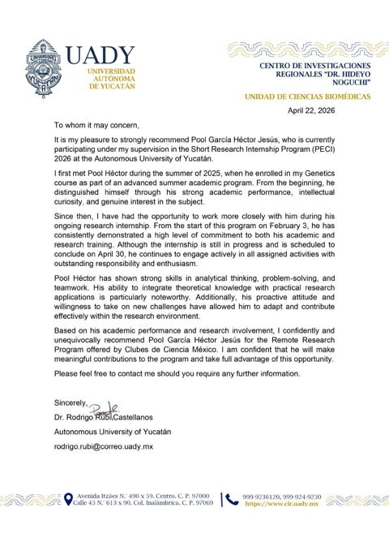
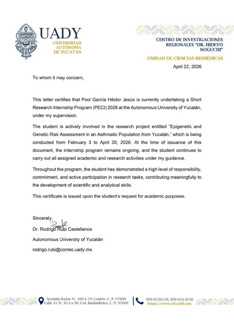

Héctor Jesús Pool García
Pharmaceutical-Biological Chemistry student at the Universidad Autónoma de Yucatán
About
I am a Pharmaceutical-Biological Chemistry student at UADY. I have taken part in research stays and volunteer in the Genetics Laboratory of the Centro de Investigaciones Regionales “Dr. Hideyo Noguchi”, where I have worked with nucleic acid extraction, allele-specific PCR, RT-PCR, and agarose and polyacrylamide gel electrophoresis.
My training also includes continuous study of the Chinese language since 2022 at the UADY Confucius Institute. This site brings together my academic background, my projects, and the documentation that supports them.
Recent activity
| Period | Activity |
|---|---|
| Summer 2026 – present | Volunteer, Genetics Laboratory, CIR “Dr. Hideyo Noguchi”, UADY. See research |
| Jan – Aug 2026 | AI Data Annotator, Welocalize. See experience |
| Feb – Apr 2026 | Research stay: TSLP variant rs2289277 and severe asthma in the Yucatecan population. See research |
Education
Formal studies and relevant coursework
| Period | Institution and program |
|---|---|
| In progress Expected graduation: 2028 | Universidad Autónoma de Yucatán (UADY), Mérida, Mexico Bachelor's Degree in Pharmaceutical-Biological Chemistry Relevant coursework: Analytical Chemistry, Organic Chemistry, Biochemistry, Microbiology, Pharmaceutical Analysis. |
| 2019 – 2022 | Preparatoria Uno, Universidad Autónoma de Yucatán, Mérida, Mexico General University Baccalaureate (Bachillerato General Universitario, BGU) Mandarin Chinese as a foreign language throughout the three years of high school. |
Additional training
| Period | Program |
|---|---|
| 2022 – present | Chinese Language Program, Confucius Institute, UADY Mandarin Chinese, HSK level 3. See Chinese language and culture page |
| 2025 – present | How to Grow (Almost) Anything (HTGAA), Stanford University, online. Auditor. Program focused on synthetic biology and biological engineering. |
| July 2025 | Clubes de Ciencia México, “CSI Laboratory: Solving a Forensic Mystery” Intensive program organized by faculty from Stanford University, UADY, and Universidad Anáhuac. |
Research
Research stays and laboratory work at the Centro de Investigaciones Regionales “Dr. Hideyo Noguchi”, UADY
| Period | Activity |
|---|---|
| Summer 2026 – present | Volunteer, Genetics Laboratory, Biomedical Unit Volunteer assistant providing ongoing support in applied biomedical research methodologies and genetic analysis. |
| Feb 3 – Apr 30, 2026 | Short-Term Research Stays Program, Winter-Spring 2026 Genetics Laboratory, Biomedical Unit Completed project: “Association of the rs2289277 variant of the TSLP gene with severe asthma in the adult Yucatecan population”. DNA extractionAllele-specific PCRGel electrophoresis Results summary (PDF) |
| Oct 7 – Dec 12, 2025 | Short-Term Research Stays Program, Fall 2025 Emerging Diseases Laboratory Project: “Detection of viruses in ticks affecting human health”, with specimens collected statewide across Yucatán. RNA extractionRT-PCRPolyacrylamide gel electrophoresis Results summary (PDF) |
Academic programs
| Period | Program |
|---|---|
| 2025 – present | How to Grow (Almost) Anything (HTGAA), Stanford University, online. Auditor. Synthetic biology and biological engineering. |
| July 2025 | Clubes de Ciencia México, “CSI Laboratory: Solving a Forensic Mystery”, Mérida Intensive scientific training organized by faculty from Stanford University, UADY, and Universidad Anáhuac. |
Presentations
Posters and results summaries
Posters
Research stay summaries
Summaries of the results of the projects carried out during the stays at the Centro de Investigaciones Regionales “Dr. Hideyo Noguchi”.
| Period | Project | Document |
|---|---|---|
| Feb 3 – Apr 30, 2026 | Association of the rs2289277 variant of the TSLP gene with severe asthma in the adult Yucatecan population Genetics Laboratory, Biomedical Unit | Results summary (PDF) |
| Oct 7 – Dec 12, 2025 | Detection of viruses in ticks affecting human health Emerging Diseases Laboratory | Results summary (PDF) |
Experience
Professional experience
| Period | Position |
|---|---|
| Jan – Aug 2026 | AI Data Annotator, Welocalize (remote)
|
Volunteering
| Period | Activity |
|---|---|
| 2022 – 2024 | Volunteer, Chinese New Year, Confucius Institute, UADY Introductory Chinese calligraphy workshops for the community and support for cultural exchange. See Chinese language and culture |
Chinese Language and Culture
Mandarin Chinese studies since 2022
Language studies
| Period | Program |
|---|---|
| 2022 – present | Chinese Language Program, Confucius Institute, UADY Continuous formal training following the curriculum of the Confucius Institute, developing listening, speaking, reading, and writing skills. |
| 2019 – 2022 | Preparatoria Uno, UADY General University Baccalaureate (BGU). Mandarin Chinese as a foreign language throughout the three years. |
Cultural activities
| Period | Activity |
|---|---|
| 2022 – 2024 | Volunteer, Chinese New Year celebrations Introductory Chinese calligraphy workshops for the local community; support for cultural exchange and the promotion of Chinese traditions. |
Application to a Chinese language program, 2025 – 2026
Between 2025 and 2026 I applied to one-year Chinese language programs at universities in China under the Chinese Government Scholarship (CSC). As part of the process I obtained pre-admission letters from five universities and recommendation letters from an instructor at the UADY Confucius Institute and from a researcher at Stanford University. They are presented here as support for my background in the Chinese language.
Pre-admission letters
Letters
Recommendation letters and certificates
Documents issued by researchers and instructors with whom I have worked or studied. Each letter can be enlarged or opened as a PDF.


Laboratory
Photographic record of techniques, equipment, and preparations from my coursework and research stays
Curriculum
Full PDF version and summary of skills
Download CV in Spanish (PDF) Download CV in English (PDF)Languages
Technical and laboratory skills
Héctor Jesús Pool García · Last updated: November 2026